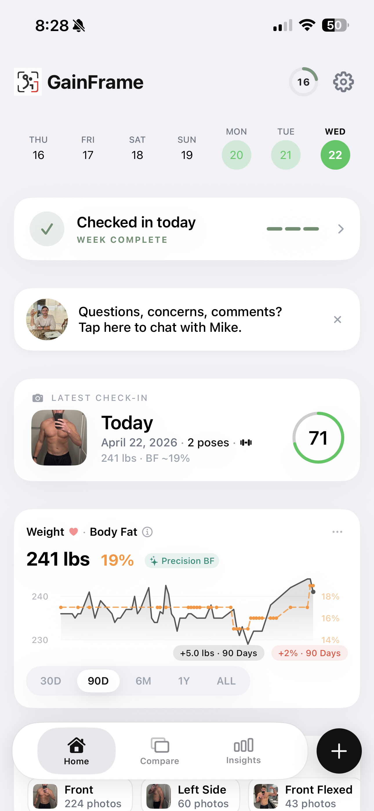
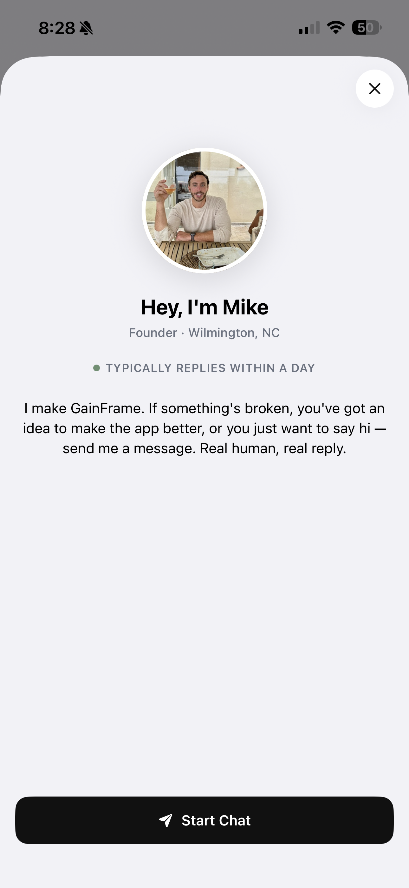

Why I Added In-App Chat to GainFrame
Analytics tells me what 1,000 users do. I still had no idea why. So I opened a direct line and started asking.

A few months ago I wrote about the moment my analytics completely rewrote my roadmap. Data from 92 users told me things I never would have guessed: a third of people never uploaded a single photo, one onboarding step was silently killing 15% of signups, and the AI features I was most proud of were barely being touched.
That data was invaluable. But it had a ceiling.
Numbers tell you what happened. They do not tell you why. And at 1,000 users, the most important thing I can do right now is understand the why.
What Data Can't Tell You
I can see that a user opened the Compare tab 47 times in 30 days and never tapped Deep Dive once. What I cannot see is whether they don't know Deep Dive exists, or they looked at it once and found it overwhelming, or they simply don't care about body fat percentages — they just want to see if they look different.
Those three users require completely different responses from me as a builder. One needs better discoverability. One needs a clearer explanation. One is telling me something important about who my actual core user is versus who I thought they were.
Analytics gives me the signal. Conversation gives me the interpretation.
Why 1,000 Users Is the Right Window
There is a specific moment in a product's life when talking directly to users is not just useful — it is the highest-leverage thing you can do. That window is early, and it closes faster than you expect.
At 100 users, you are still figuring out if anyone wants what you built. At 10,000, the volume becomes noise that requires infrastructure to manage. At 1,000 users you have real people with real routines who have made a real decision to keep coming back. Their opinions are informed. Their frustrations are specific.
For GainFrame — a weekly-use consumer app — 1,000 active users is where I found the balance: enough people to spot trends, but few enough that I can read and respond to every message in about 40 minutes a day. That is when in-app chat gives you the clearest signal with the least noise.
This work cannot be delegated yet. A support agent can resolve tickets. Only you can recognize that the same frustration mentioned by five different people maps directly to a drop-off in your onboarding funnel.

What I Actually Want to Know
I am not opening this channel to collect feature requests. Feature requests are what users think they want, filtered through their assumptions about what is possible. What I actually need is three things:
- Does sentiment match the metrics? If my data says Compare is the most-used screen, do users actually think it's the most valuable part of the app — or are they using it because everything else is harder to find?
- What value am I not measuring? Motivation, accountability, the feeling of progress. These are invisible to analytics. I want to hear people say it in their own words.
- What frustrated them enough to notice? Not every frustration becomes feedback. Most people silently stop using something. The ones who speak up are giving me a signal I should take seriously.
What Feedback Actually Reveals
I categorize every message into one of three types, because each demands a different response:
- Confusion — users don't understand what exists. Fix copy, onboarding, or UI hierarchy.
- Capability gaps — users understand but can't do what they need. Evaluate whether to build or say no.
- Preference differences — users want something that conflicts with your core direction. Acknowledge and decline.
When a user messaged "I can't figure out how to delete a bad photo," that was confusion — the delete button existed but was buried in a long-press menu. I moved it to the photo detail screen. Upload frequency increased among users who had previously gone dormant.
The frustration existed in my data. I just didn't know what it meant until someone told me.
The Urgency Trap
The honest risk of opening a direct feedback channel: everything feels urgent.
A user messages you that they wish they could export their photos as a PDF. It sounds easy. Another wants a dark mode widget. Another wants workout log integration. Each message comes from a real person with a real need, and it is psychologically very hard to read those messages without wanting to build everything immediately.
That is the trap. Implementing every suggestion does not make a better product. It makes an incoherent one.
One message is an anecdote. Three or more people raising the same issue is a pattern worth investigating. A pattern that also shows up in your behavioral data is a problem worth solving.
The discipline required is counterintuitive: care deeply about every message while refusing to act on any single message in isolation. When I decide not to build something, I send a direct reply: "Thanks for this suggestion. I'm not planning to add PDF export — it would pull focus from the visual comparison features most users rely on. If that changes, I'll let you know." Saying no clearly is more respectful than letting a request disappear into a backlog.

What This Looks Like in Practice
Starting today, there is a banner on the GainFrame home screen that lets you tap directly into a chat with me. Powered by Crisp — not a bot, not a support queue. If you send a message, I will read it and reply.
I run two 20-minute chat windows a day, 10am and 4pm. Outside those windows, messages queue. Every message gets tagged immediately — bug, confusion, feature-request, praise — and after 30–50 messages I do a review to find what's surfacing across multiple conversations.
The banner is dismissible. I am not trying to interrupt your workout tracking. But if something is broken, something confused you, or you genuinely wish the app did something it doesn't — I want to know.
Real human, real reply. That is the entire pitch.
The Rules I'm Setting for Myself
Log everything, react to nothing alone
Every message gets categorized. No single message changes the roadmap on its own.
Wait for three
Three or more people raising the same issue is a pattern. That is when I investigate. One is just an anecdote.
Cross-reference with data
When sentiment and behavioral data point at the same thing, that is the thing I build next.
Say no clearly
Not every good idea fits GainFrame. A direct "no, here's why" is more respectful than a silent backlog.
What I'm Hoping to Learn
By the end of this, I want to answer a question I cannot currently answer from my dashboard alone: who is GainFrame actually for?
People who want to see their physique change over time. People frustrated that the scale lies. People who need a record of progress to stay motivated when results feel slow. I have hypotheses. I don't have the answer yet.
Talking to users is how you find out. Then you build obsessively for that person.
The User Who Changed My Mind
Remember that Compare tab user from the beginning?
I messaged them. Their reply was three sentences: "I don't care about the numbers. I just want to see if I look different. The side-by-side is the whole reason I use this app."
That single exchange changed how I prioritized the next quarter. I stopped trying to make Deep Dive more discoverable and instead added a quick-compare shortcut to the home screen. Activation for new users ticked up over the following month.
My dashboard told me what users did. One chat message told me why. That is the difference between optimizing a feature nobody wanted and doubling down on the one screen that actually mattered.
If You're a GainFrame User Reading This
The chat banner is live on the home screen today. Tell me what you use most. Tell me what confused you. Tell me what you wish existed.
I am reading every one.
The best products are built by founders who get obsessed with understanding their users — not their own ideas. I am still learning who you are. Help me get it right.
A Simple Framework for Founder-Led Feedback
If you're building something with fewer than 10,000 users and haven't opened a direct channel yet, here is where to start:
- Pick one tool and surface it prominently. Crisp, Intercom, or a dedicated email address. A buried feedback link gets no messages — put it where users are actively engaged, not in Settings.
- Log every message immediately. Tag it: bug, confusion, feature-request, praise. Don't rely on memory.
- Set time boundaries. Two 20-minute windows per day. Outside those, messages queue. Protect your focus.
- Wait for three. One message is an anecdote. Three mentions of the same thing is your signal to investigate.
- Cross-reference with data. When what users say aligns with what your funnel shows — that is the thing you build next.
Track your physique. See the change.
GainFrame uses AI-powered progress photos to show you what your data dashboard can't: how you actually look, evolving over time.
Download GainFrame